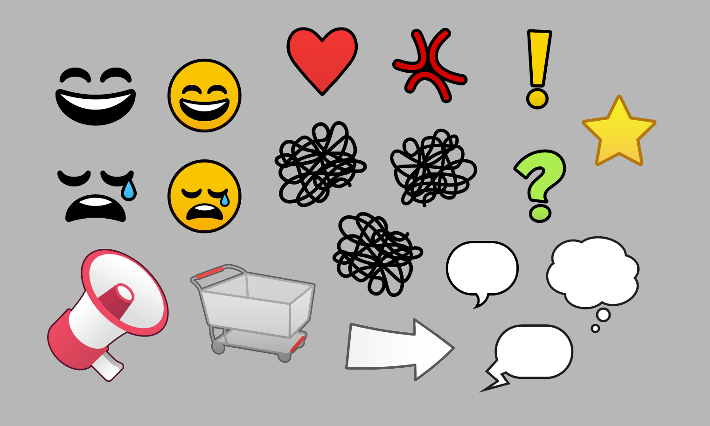
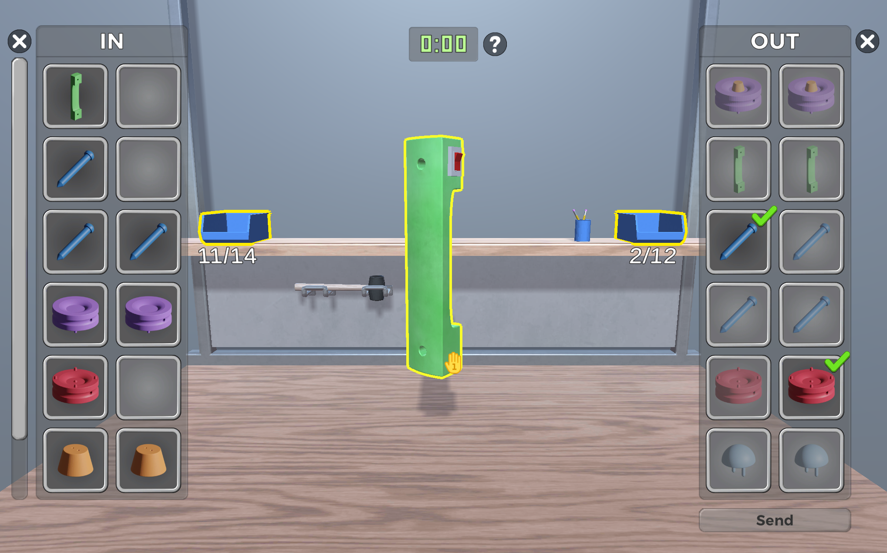
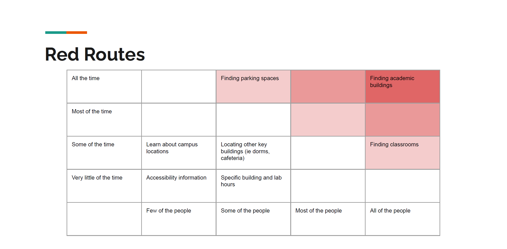

Simon is a designer and software developer who enjoys focusing on the user experience. He’s used his knowledge to create websites, software, and video games.
Simon has 2 years total of professional experience. His top skills are Unity, HTML, CSS, Autodesk Maya, Blender, Adobe Photoshop, Adobe Illustrator, UX, UI, C#, and Javascript.
This online portfolio showcases his favorite and most unique pieces. Each project has insight into Simon's design process, paired with curated images, videos, process books, and links to playable games.
The Fool is an interactive experience that demonstrates 3D techniques using Unreal Engine. The project prompt was a provided tarot card, and Simon drew The Fool. To reflect this, he wanted to create an experience that emphasized the unknown. Simon worked heavily with lighting and sound to create the mysterious, unsettling atmosphere shown in the walkthrough video above.
This portal lights up at the end of the experience when all four gems have been found. This portal acts as a center hub for the experience, as the pathways surround and converge onto this point. The lighting changes dramatically when the portal is active, which makes the cave much less oppressive. This reflects a turning point in the fool's journey, as you would see in a tarot deck.
This screenshot shows off the lanterns and wooden support beams scattered throughout the level. These lanterns are one of the few sources of light throughout the experience - the others being the lantern held by the player and the portal after it has been activated.
These are the modular wall assets created for use in the experience. The wall meshes were made to be repeated horizontally with no seams. Using Unreal, a blueprint was created to add rocks surrounding the base to break the transition between the floor and wall.
The materials were set up using Unreal's material nodes system. Some textures, like this cracked ground texture, had to be multiplied in order to scale them correctly over a large area. This material was used for the ceiling and floor.
A lot of time was spent designing the level before assets were created, and this shows one of the many iterations on the graybox and layout of the experience. The graybox was created using Unreal's primitives and plenty of sketching.
The interactivity was made possible through Unreal's blueprint system. While Simon could've done this using C++, he decided to give the blueprint system a shot to see what all the fuss was about. The system was used to make simple interactions possible, such as revealing the gemstones and determining if all four gemstones had been collected.
KEJI
KEJI started as a prototype Simon created in Phaser to test an idea that he had - a platformer where the level could change based on the web browser's size. In this project, Simon worked on pretty much everything. He created the player sprites and a handful of objects and environmental sprites, but soon switched to programming. The game features six levels, an interactive start and win screen, text tutorials, and original music and sound effects. Winner of best gameplay at the Stout Game Expo (SGX) in 2020.
The level designs would rely on resizing the browser window to modify the level in order to proceed. In the level shown above, the player will easily be able to push the ice cube down to the heater to unlock the exit, but getting back up isn't possible without making the window smaller vertically in order to reach the exit.
Simon also created all of the music and sound effects using BeepBox. The SFX were carefully chosen to provide player feedback without being annoying. During playtesting, the group noted that the playtesters found the game satisfying, and Simon believes that the difficulty of mastering the resizing mechanic combined with the positive SFX contribute to that effect.
Runoff
Runoff is a board game centered around the environmental threat of runoff. Players have to strategize the expansion of their city by balancing power production and pollution. Adding buildings to your city provides victory points to determine the winner at the end of the game. However, if too much pollution reaches the river, both players immediately lose. The game features a hand crafted wooden board, laser cut wooden pieces, and printed event cards and rulebooks. This game was brought to Protospiel Minnesota in 2018, and was shown in the Best of Design show at Stout in 2019.
The event cards were one of Simon's contributions to this project. They provide an element of randomness for players to be surprised by. Some events would be positive, and others would be negative. The cards were printed and hand cut. Simon also designed the poster shown below, the rulebook, and business cards that were used at Protospiel.
Simon worked on a lot of the graphic design for this project, including the rulebook seen above. Simon used diagrams and a clear text hierarchy to fit the ruleset onto a two page spread. The game's mechanics center around building improvements that slot into the board, while balancing the amount of pollution that is added to the river.
The back side of the rulebook (left) provides information about runoff and pollution. There are polluted water sources within Menomonie that were caused by runoff, and the group wanted this game to have an educational component that addressed the inspiration for the game. The artwork on the front side of the rulebook (right) was used as the promotional poster for the game at the Stout Game Expo (SGX).
Waltz of the Thief
Waltz of the Thief is an Android game created using Unity. Simon was a member of the small group that created the game. He created the majority of the sprites in the game, along with the level designs. Waltz of the Thief is a stealth game where every character moves at the same time as the player. The player has to predict guard patrols in order to avoid being seen, while also finding the key to the exit door that brings them to the next level. The game features four levels and a tutorial stage, four enemy types, and many NPCs with items to pickpocket.
Throughout the course of the game's development, Simon created unique tilesets for each level. To demonstrate the use of the tiles, he created demos that show how the tiles can be used in a level. This demo is for the library, the third level in the game. It shows the player sprite idle animation, fireplace and portrait sprites for decoration, and floor and wall sprites to construct the level.
This is another demo of a tileset used in the last level of the game, the attic. This demo also includes the HUD elements used for controlling the player, along with the settings gear. The centerpiece of the attic level is the stained glass window shown in the center, which provides a dramatic exit for the player as they crash out of the window to escape the mansion.
T-Rex Cookie Rescue
Simon worked as part of a small team to develop a web game for a client, T-Rex Cookie. The game was developed in roughly 3 weeks, which limited the complexity of the project. T-Rex Cookie Rescue is an infinite runner where the player is a cookie trying to escape being squashed by a T-Rex baker.
Simon created vector assets for use within Unity, added animations and polish, as well as programming a handful of features into the game. The project focused on achieving friendly, fun visuals within a short time period.
UX & UI Design
Inconvenience Store UI
Simon worked hard on the UI elements for Inconvenience Store - a physics-based part game made with Unity. This game was created as a part of Stout's Game Design & Development capstone course, in which a 3D game is developed over the course of two semesters. Simon was on a team of 12 students - 6 artists and 6 programmers. Branding for a fictitious grocery store, Happy Mart, was created as part of the setting.
Much of the work Simon did was creating vector icons to use within the game. Spatial UI was used by several systems within the game, and help add set dressing or clarify mechanics of certain minigames.
The logo for the game was an enjoyable undertaking for Simon, as it needed to be fun and stand out. Inconvenience Store emulated retro qualities, especially 80s and 90s aesthetics, so gradients and 3D text were a must.
Simon created button prompts to help with the onboarding process for players. These prompts contain all of the buttons used on controllers (XBox and PlayStation) for the game, as well as a few keyboard and mouse prompts.
The button prompts are used during gameplay, and also are arranged in the main menu to show the controls of the game.
Simon did a lot of work within Unity to create responsive UI elements for the game. The level select screen needed elements to be laid out in a grid, but also scale with any screen size. This was accomplished entirely using Unity's UI components.
Player customization was a feature developed for Inconvenience Store, and the UI needed to be quick and clear to allow the user to get right into picking their favorite hat.
Many food icons were made for the minigames and full store, and help guide the players through the level. Simon's favorite is the bananas.

Other miscellaneous icons are used throughout the game as well, whether it's a part of spatial UI for a minigame like an emoticon for an NPC or a navigation arrow for a menu. The megaphone icon was used in an intercom system to allow text to be shown to the player and contextualize voice lines.
Buzz Digital UI
Buzz Digital is a lean manufacturing simulation created with Unity for Android tablets. Simon was hired by the UW-Stout Manufacturing Outreach Center (MOC) to work on this project as an art generalist. UI was a huge part of this project, as the simulation needed to emulate the behavior seen in the inspiration for the project - physical training simulations performed by the MOC. Buzz Digital provides a virtual way to deliver this training.

The in and out menus are attached to the blue bins, and show what parts are contained inside. Users can drag parts out of the bins to manipulate them in the center to complete the tasks assigned at their station. Once they are finished, the user passes the completed part to the next station by placing it in the out bin on the right side. Check marks appear to aid the player in seeing how close they are to being able to pass their parts along. Both bin menus are dynamic, and will adjust their sizes based on the amount of parts given to each station.
Station instructions help guide the user. The simulation progresses over 3 rounds, and shows how inefficient practices can improve with lean techniques. To reflect the rest of the simulation improving as the rounds progress, the station instructions improve as well. They start off by containing too much text with not enough helpful images, and end with diagrams that resemble IKEA manuals.
UW-Stout Campus Map
This group project was focused on examining UW-Stout's current campus maps and performing user research in order to improve them. This resulted in two prototypes created with Adobe XD - one for Stout's website and one for a mobile app.
Both versions began as paper prototypes that underwent user testing before being brought into Adobe XD. The paper prototypes were created after extensive user research, which included a competitive analysis of other campus maps, user interviews, user personas, red routes, user stories, and card sorting research.
The affinity map process was important to understand what the users needed from a campus map. Using information gathered from user research, the affinity maps helped with the creation of a primary persona and red routes.
The primary persona chosen was a freshman student at UW Stout, and would use the campus map app and website to gain their bearings on the new surroundings.

Combining the information gathered from the user research, along with the direction provided by the primary persona, the red routes were defined. The most important task was to be able to use the campus map to find academic buildings, along with finding parking spaces and classrooms.
The final XD prototypes turned out well, and additional testing was done to determine the project's effectiveness. These XD prototypes used all of the information gained from the research and paper prototype testing.
Take-out!
This project was aimed at performing user research for a food mobile app. Simon chose Erbert & Gerbert's, and decided to focus on streamlining the ordering process. To start, a basic usability evaluation was done, followed by a competitive analysis for three other similar apps.
User research was then performed for the app. Due to COVID-19, in-person interviews were limited. To compensate for a lack of data in this area, an online survey was conducted as well as researching app store reviews for common complaints. Observations taken from the research were grouped into an affinity map, and used to create a prioritization matrix and user personas.
Once all the data was gathered, Simon created a new design in the form of a lo-fi paper prototype and tested it with a few users. Most users provided testing over a video call. The prototype proved to be successful, and limited confusion in the areas that users were struggling in the app.
Web & Graphic Design
Blue Devil Productions Website
During his time working with Blue Devil Productions, he was tasked with redesigning their website. Their previous site hadn't been updated in 10 years, and was becoming challenging to maintain. The site now features a new layout, cleaner design, mobile friendly version, and easier navigation to important resources.
The interior pages retain a similar layout for clarity, and aim to provide information clearly and efficiently. A focus of the redesign was to create a hierarchy so that the most important information would be viewed first. On the homepage, this would be the slideshow that features the next upcoming events. The blog section of the site was also revisited to be much easier to browse, and also allows for long-form articles to be included as part of BDP's social media presence.
Simon created several mockups when designing this website. These acted as deliverables in order to get the design approved. The image above shows a trio of high fidelity wireframes - desktop, tablet, and mobile with a popup menu.
NRC Poster
For this project, Simon was tasked with creating an event poster. The National Reuse Conference is a fictional event created for use in this project. Simon wanted to make a poster centered around sustainability, and the idea of reuse ties into the transformation of the bottle into a lightbulb. Simon had previously been studying Paula Scher and her use of typography, and decided to incorporate Scher's method of type-as-image into his own style.
This project aimed to turn a word prompt into a symbol that could be used as a logo. Simon chose "Poetry", and iterated on creating a graceful, flowing symbol that reflected the word's meaning. Many sketches were made before moving into Illustrator, and Simon focused on developing two symbols: one that was abstract, and one that was representational.
The final symbol could be used in many different ways, as shown with the template mockups used for pre-visualization. The bold purple color lends itself to popping off of a white page.
The sketches were based off of word lists before picking out a handful of abstract and representational symbols to develop further.
The final two concepts were iterated on even further, and Simon chose to finish the abstract symbol by adding color. However, Simon still enjoys the representational lips/book symbol.
MIA Exhibition Flyer
This flyer was created for a Minneapolis Institute of Art exhibit, although this design was not used by the MIA - it was just for practice. The show focused on art during the Vietnam war. One of the pieces used for promoting the exhibition was Mi Vida (My Life) by Jesse Treviño, and Simon based the soldier vector art on a section of that piece.
Soul Assemblage
Simon was asked to create a website for Minneapolis Community & Technical College's Apparel Design graduate show. The year's title for the show was Soul Assemblage. Simon created a site that featured their work and provided details for their senior show. The website was developed as a custom Wordpress theme, and each graduate had a full bio and multiple pictures attached to them.
This page was the most important on the site, as it showed off the student's work. The left side shows their bio, model attribution, and contact information. The right side shows off their work with a dynamic picture frame that adjusts to any image size. The site is also mobile friendly, and rearranges itself to provide the same experience.
For this project, Simon had to create assets for a vector art pier that would be given basic interactivity in Unity. Simon decided to create a pier inspired by H.P. Lovecraft's story At the Mountains of Madness. This meant creating a seemingly normal pier in an arctic environment, but hints within the scenery revealed the pier's true nature.
Simon had to create an animated character to walk across the pier, and a bundled up, burly man seemed appropriate. The character's limbs were grouped together in Illustrator and rotated along the appropriate joints to create the frames for the walk animation.
The assets show inspiration from graphic novel styling, which further reinforces that this pier is a re-imagining of a classic tale. Hints at the story can be seen within these assets - the elder sign (star symbol) on the wooden board, the oversized penguins in the background, and the strange city in the distance.
The final experience was carefully arranged in Unity to show the depth of the scene, and serve as a proof of concept for a game made with this art style.
Charcoal and Pastel Drawings
Simon created a large variety of drawings at UW-Stout. Charcoal and pastel are the two major mediums used, although occasionally other forms of media would be used. Shown below are various still lifes and outdoor scenes. Shown above: Skull Still Life, 22" x 30" charcoal.
Reflective Still Life, 25.5" x 19" oil pastel on toned paper.
Nighttime Light Study, 25.5" x 19" oil pastel on toned paper.
Constructed Still Life, 22" x 30" charcoal.
Daytime Color Study, 19" x 25.5" colored chalk on toned paper.
Café Collage, 22" x 30" mixed media collage.
Paper Box Still Life, 24" x 18" charcoal.
Illustration and Concept Visualization
Simon has created artworks that are illustrative or using constructive design techniques. Media varies from pen and ink to digital painting. Shown above: Pea Pods, 9" x 13.5" micron pen.
Grim Western Scene, 17" x 14" pencil, pen, and marker.
Noir Comic, digital illustration.
Material Renders, approx. 4" x 4" each pencil, pen, and marker.
Pixel Art City Blocks
Simon created city blocks to be used in a large group effort to piece together a pixel art city. Each student would create several city blocks and stitch them together into one large piece. Simon created a construction site, along with three blank blocks to be populated with objects.
After all of the city blocks were put together, an animated character was created so that the city could be traversed within Unity. Simon created a construction worker to stick with his original theme.
In addition to the pool, lawn, and digsite, Simon also created a food truck, bus stop, and lamppost.
Figure Studies
Simon studied life drawing at UW-Stout, and amassed a large amount of quick figure studies from his classes. Most drawings were done in 30 minutes or less, but some would allow for more time. Shown above: Sabrina, 18" x 24" charcoal.
Self-portrait, 19" x 25.5" oil pastel on toned paper.
Crouching Figure Study, digital illustration.
Leg Studies, digital illustration.
Hand Study, 18" x 24" charcoal.
3D Modeling & Animation
Buzz Digital Models
In his senior year, Simon began working for the UW Stout Manufacturing Outreach Center to develop a lean manufacturing training simulation. The simulation targeted Android tablets, and would be a multi-player experience created in Unity. Due to licensing restrictions at the university, Simon had to learn open-source software, such as Blender and ArmorPaint, for the creation of the 3D assets.
The simulation, later titled "Buzz Digital", involved constructing an object with multiple parts, so the canister was created to be able to be easily broken down into multiple pieces. The canister object was loosely themed around sci-fi electronics. Each part was modeled individually to offer precise construction. Simon was able to practice using Blender, and developed better topology skills along with being exposed to new tools.
Buzz Digital also needed a backdrop for the canister objects to be assembled in front of, so background models were created to add to the scene. The models were created in Blender, textured in ArmorPaint, and imported into Unity.
Midnight Hour
This was a group project to model and animate a section of a street. Simon arranged the scene with all of the assets that were created, rigged and animated the hooded figure walking towards the camera, modeled the bridge and street, and edited the final video of the project.
Bridge used to add convincing depth to the scene. The fence asset from the foreground was incorporated into this structure to make the scene cohesive.
Player 13 Robot
This was a project that involved designing a robot based on a verb prompt. Simon received the word "kick", and thought of the robots used in the RoboCup. He started with a 2D turnaround of the design before creating it in Maya.
Simon wanted the design to be playful and modern, and not aggressive or threatening in any way. The small arms would just be used for balance and right itself if the robot fell over. The design suggests modularity, as if the entire thing could be disassembled and reassembled easily. This could be for maintenance, or to switch out the small arms for larger ones if the robot was acting as the goalie.
The model translated the same ideas Simon had from above into 3D space. He created a basic ball model to assist, but ended up refining it with an improved concept for the animated video.